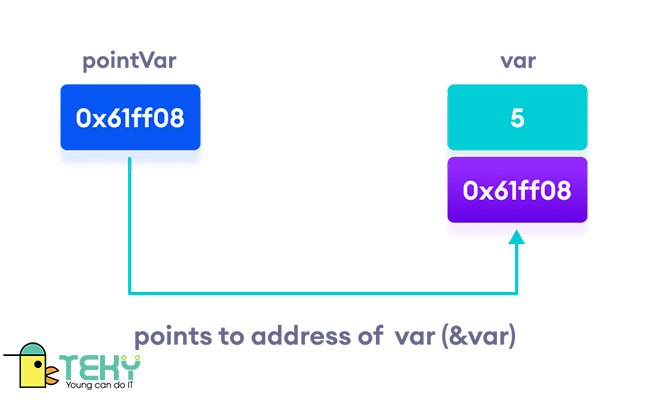
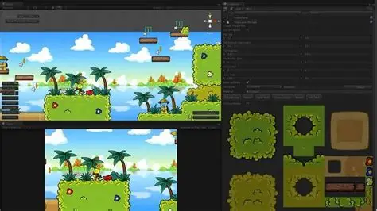
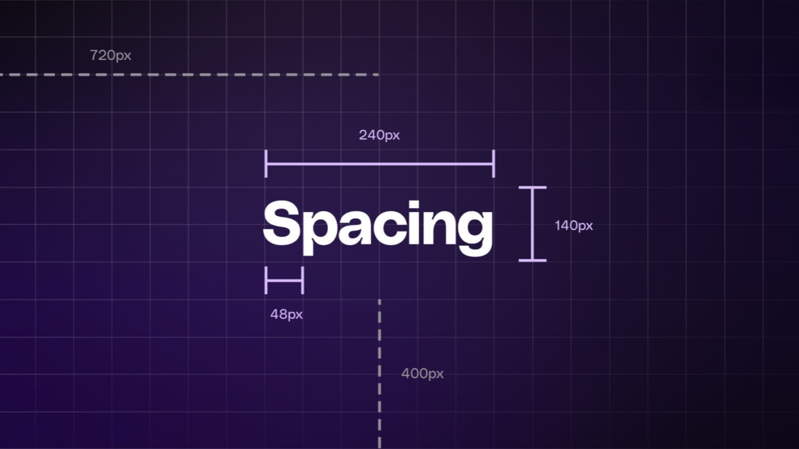
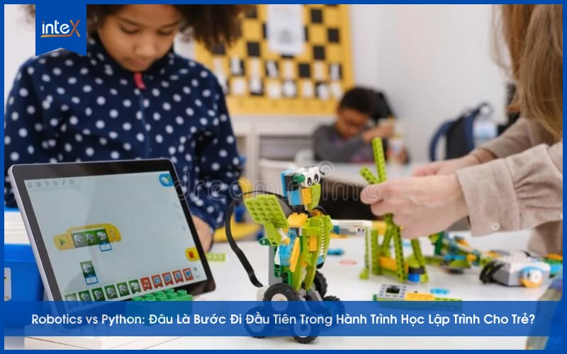

Kiến Trúc Của Sự Tĩnh Lặng: Xây Dựng Giao Diện Tối Giản Thực Sự Hiệu Quả
Thiết kế đẹp không liên quan đến việc thêm màu sắc hơn, font weight hơn, hay nhiều khoảng trắng hơn — mà là tạo ra giao diện cảm giác tự nhiên và đúng đắn về mặt thiết kế.
Đọc bài viết →
Hiểu Con Trỏ Trong C++ Qua Những Ví Dụ Thực Tế
Hành trình từ hoang mang đến tự tin với con trỏ — thông qua các ví dụ về quản lý bộ nhớ, cấu trúc dữ liệu và hiệu suất.

Xây Dựng Game 2D Từ Đầu Bằng C++ Và SDL2: Bài Học Rút Ra
Sau khi hoàn thành trò chơi 2D đầu tiên bằng C++, đây là những gì tôi học được về vòng lặp gameplay, xử lý va chạm và thiết kế cấp độ.

Hệ Thống Spacing 8px: Tại Sao Ràng Buộc Lại Là Tự Do Sáng Tạo
Hệ thống khoảng cách không chỉ dành cho designer — áp dụng quy tắc 8px vào code giúp bố cục hàng loạt định quyết định layout không cần thiết.

Tự Động Hóa Công Việc Học Tập Với Python: 3 Script Tôi Dùng Mỗi Ngày
Từ tạo flashcard tự động tới ghi chú, đến nhắc ôn tập nhờ lặp theo spaced repetition — Python giúp việc học trở nên có hệ thống hơn.